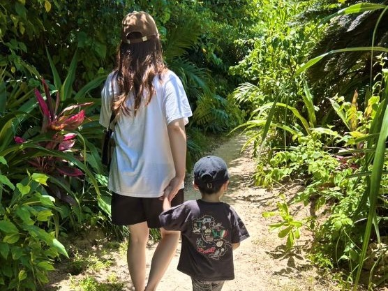

Voice 受講生の声
-

M.M30代前半｜2023年5月入会
1体1での質問が出来ると聞いてプロナビに入り、実際2ヶ月間ほど1対1で毎週教えて頂きました。案件獲得も3度ほど打ち合わせに同行いただいたため、案件の進め方も教えて頂きました。
-

N.Y20代後半｜2022年6月入会
マンツーマンで授業をしてもらい、疑問を一緒に解決してもらえるだけでなく、課題があるので自分で調べたり考えたりする力もついたと思います。案件に向けてもきめ細かいサポートがあるので、プロナビで学習できてよかったと実感します。
-

M.M30代後半｜2025年5月入会
息子の「小1の壁」や長期休暇、体調不良など、場所に囚われず働ける術を求めてプログラミングを学び始めました。プロナビは、案件獲得までのサポートが非常に手厚く、他のスクールとは違う独自の営業方法まで教えてくれる点に惹かれて入会。優しい先生方や仲間のおかげで、忙しい中でも楽しく、挫折せずに学習を進められています。
-

W.K20代後半｜2023年4月入会
何人かとお話をしてみて、信用できる！と感じだとので入会しましたが、案件獲得までこんなにサポートしてもらえるなんてびっくりです！みなさんと出会えて本当にしあわせです！
-

W.K20代後半｜2023年4月入会
副業からフリーランスになりたいと思って入会しました。優しく向上心が高い方が多いので、初心者の私でも挫折せずに進められましたし、今までの自分からは考えれない全く別の職種が広がり、考え方や人生観も変わりました。
-
M.U30代後半｜2025年8月入会
島出身のため、将来的な親の介護などで帰郷する可能性を考え、場所を選ばない在宅ワークの環境を築きたくプログラミングを独学していました。しかし、難しさを感じたため入会を決意。先生や他の受講生との交流を通じて、新たな知識や発見が格段に増え、目標達成に向けて大きく前進できています。
-

K.S40代前半｜2025年2月入会
転勤族で家庭と仕事の両立を目指して入会しました。講師の先生の説明は的確で丁寧、時間を問わず相談やアドバイスをいただけるので、とても信頼できます。子供の急な発熱時など、授業の調整も柔軟に対応してくれるため、モチベーションを維持して学習が続けられる体制が整っているのも魅力だと感じています。
受講生
インタビュー
Work 受講生の実績・オリジナルサイト
卒業生の実績


卒業生制作サイト『PORTNAVI』
卒業生が制作したWebサイトの実績は、
作品ギャラリーサイトPortNaviで公開しています。